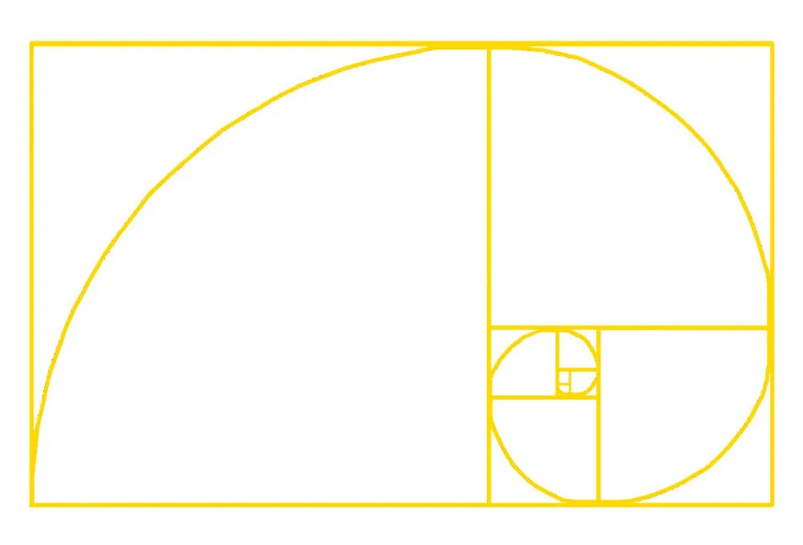

Lets's take a look at another beautiful building.
St Pauls Cathedral
History
The first christan Cathedral stood here dedicated to St. Paul in 604 AD, but after subsequent fires and burnings the cathedral we see today was designed by Sir Christopher Wren. After having his plans approved in 1675, hes oversaw the build of the project, but instilled extra parts from his previous designs. his design combined parts of Gothic, Neo-lithic and the english restoration, with also a part of 17th century scientific analysis.
In July 1668 Dean William Sancroft wrote to Wren that he was charged by the Archbishop of Canterbury, in agreement with the Bishops of London and Oxford, to design a new cathedral that was "Handsome and noble to all the ends of it and to the reputation of the City and the nation". The design process took several years, but a design was finally settled and attached to a royal warrant, with the proviso that Wren was permitted to make any further changes that he deemed necessary. The result was the present St Paul's Cathedral, still the second largest church in Britain, with a dome proclaimed as the finest in the world.The building was financed by a tax on coal, and was completed within its architect's lifetime with many of the major contractors engaged for the duration.
The Golden Ratio
The golden ratio, also known as the golden number, golden proportion or the divine proportion, is a ratio between two numbers that equals approximately 1.618. Usually written as the Greek letter phi, it is strongly associated with the Fibonacci sequence, a series of numbers wherein each number is added to the last.
The golden ration of St.Paul`s Cathedral is 72.28%
Visitor Numbers
The visitor numbers for St Paul`s Cathedral are approximately 1,700,000 per year...that`s one visitor every 18.5 seconds!